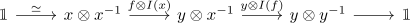

group object in Cat is underlying a groupoid
Proposition
Let $(\mathcal{C}, \otimes)$ be a group object in Category Cat (or the homotopy category of the $(2,1)$ category) Then the underlying object $\mathcal{C}$ is a groupoid
Proof
Observe that there exists a functor
(cf. some recognition principle for anima valued monoids and connected, pointed categories)
This functor is product preserving (cf. mapping anima functor preserves limits, limit in the category of monoids) so induces a functor
and similarly (cf. product preserving functor induces functor on cartesian groups) a functor
Let $\mathcal{C} \in \mathrm{Grp}(\mathrm{Cat})$. Now dunn-lurie additivity theorem (or Eckmann-Hilton Argument) shows that $\mathrm{Grp}(\mathrm{Mon}(\mathrm{An})) \simeq \mathrm{Grp}_{\mathbb{E}_2}(\mathrm{An})$, so in particular:
- both monoid structures of $\mathrm{End}_{(-)}(\mathbbm{1})$ agree: composition and tensor product $- \otimes -$.
- the tensor product induces by assumption a group structure, so in particular composition induces also a group structure.
This shows, that each element morphism in $\mathrm{End}_{\mathcal{C}}(\mathbbm{1})$ is an equivalence.
So let $f: x \rightarrow y$ be any morphism, we want to show that $f$ is an equivalence.
Now recall that any group admits an inversion, that is in our case a functor $(-)^{-1}: \mathcal{C} \rightarrow \mathcal{C}$ such that $x \otimes x^{-1} \otimes - \simeq \mathrm{id}$ and $I(\mathbbm{1}) \simeq \mathbbm{1}$. In particular, we may consider the composition

which is an equivalence. This shows that $f \otimes I(x)$ is a split mono and hence so is $f \simeq f \otimes I(x) \otimes x$. Now the same argument shows that the left inverse of $f$ is not only a split epi but also a split mono, hence an an equivalence (cf. equivalence as split mono and split epi). But inverses of equivalences are equivalences, which shows that $f$ is an equivalence. (cf. left inverse of an isomorphism as right inverse).